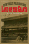
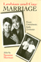
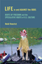

Browse
other Titles:
A B C
D E F
G H I
J K L
M N O
P Q R
S T U
V W X
Y Z |
 |
La
Merica
Images of Italian Greenhorn Experience
La
Sorte, Michael A.
224 pp • 5.5x8.25 • Spring 1985
paper 978-1-59213-234-8
cloth 978-0-87722-382-5
|
 |
La
Raza Unida Party
A Chicano Challenge to the U.S. Two-Party Dictatorship
Navarro,
Armando
384 pp • 7x10 • Spring 2000
paper 978-1-56639-771-1
cloth 978-1-56639-770-4 |
|
Labor
and Capital on the African Copperbelt
Parpart,
Jane L.
248 pp • Fall 1983
cloth 978-0-87722-325-2 |
 |
Labor
at the Ballot Box
The Massachusetts Prevailing Wage Campaign of 1988
Erlich,
Mark
232 pp • Fall 1990
cloth 978-0-87722-727-4 |
 |
Labor
of Fire
The Ontology of Labor between Economy and Culture
Gullí,
Bruno 232 pp • 6x9 • Fall 2005
paper 978-1-59213-113-6
cloth 978-1-59213-112-9
|
 |
Labor's
Story in the United States
Nicholson,
Philip Yale
376 pp • 7x10 • Spring 2004
paper 978-1-59213-239-3
cloth 978-1-59213-020-7
|
 |
Labor's
Time
Shorter Hours, the UAW, and the Struggle for American Unionism
Cutler,
Jonathan
256 pp • 5.5x8.25 • Spring 2004
paper 978-1-59213-247-8
cloth 978-1-59213-246-1
|
 |
Labor's
War at Home
The CIO in World War II
Lichtenstein,
Nelson
352 pp • 6x9 • Spring 2003
paper 978-1-59213-197-6
cloth 978-1-59213-196-9
|
 |
Laboring
for Rights
Unions and Sexual Diversity Across Nations
edited
by Hunt, Gerald
328 pp • 7x10 • Fall 1999
paper 978-1-56639-718-6
cloth 978-1-56639-717-9
|

|
Ladies and Gents
Public Toilets and Gender
edited by Gershenson, Olga, Barbara Penner
262 pp • 6x9 • Spring 2009
paper 978-1-59213-940-8
cloth 978-1-59213-939-2
|
|  |
Land
of the Giants
New York's Polo Grounds
Thornley,
Stew
192 pp • 7x10 • Fall 2000
cloth 978-1-56639-796-4
|
 |
Language
Policy and Identity Politics in the United States
Schmidt,
Sr., Ronald
296 pp • 6x9 • Spring 2000
paper 978-1-56639-755-1
cloth 978-1-56639-754-4
|

|
Laotian Daughters
Working toward Community, Belonging, and Environmental Justice
Shah, Bindi V.
216 pp • 6x9 • Fall 2011
paper 978-1-4399-0815-0
cloth 978-1-4399-0813-6
|
 |
Larry
Kane's Philadelphia
Kane,
Larry, foreword by Dan Rather
280 pp • 6x9 • Fall 2000
paper 978-1-56639-961-6
cloth 978-1-56639-806-0
|
 |
Las
Hermanas
Chicana/Latina Religious-Political Activism in the U.S. Catholic
Church
Medina,
Lara 232 pp • 5.5x8.25 • Spring
2004
paper 978-1-59213-483-0
cloth 978-1-59213-250-8
|
|
Latina
Politics, Latino Politics
Gender, Culture, and Political Participation in Boston
Hardy-Fanta,
Carol
272 pp • 6x9 • Spring 1993
paper 978-1-56639-032-3
cloth 978-1-56639-031-6 |

|
Latino Lives in America
Making It Home
Fraga, Luis R., John A. Garcia, Rodney E. Hero, Michael Jones-Correa, Valerie Martinez-Ebers, and Gary Segura
224 pp • 5.5x8.25 • Spring 2010
paper 978-1-43990-049-9
cloth 978-1-43990-048-2
|
|
Latino Mayors
Political Change in the Postindustrial City
edited by Orr, Marion and Domingo Morel, foreword by Luis Ricardo Fraga
312 pp • 6x9 • Fall 2017
paper 978-1-4399-1543-1
cloth 978-1-4399-1542-4
|
 |
Latinos
and the U.S. Political System
Two-Tiered Pluralism
Hero,
Rodney E.
256 pp • 6x9 • Spring 1992
paper 978-0-87722-910-0
cloth 978-0-87722-909-4
|
 |
Latinos in New England
edited
by Torres, Andrés 344 pp • 6x9
• Spring 2006
paper 978-1-59213-417-5
cloth 978-1-59213-416-8
|
|
Law
and Order and School
Daily Life in an Educational Program for Juvenile Delinquents
Birnbaum,
Shira
208 pp • 5.5x8.25 • Spring 2001
paper 978-1-56639-870-1
cloth 978-1-56639-869-5
|
 |
Law
and the Environment
A Multidisciplinary Reader
edited
by Percival, Robert V. and Dorothy C. Alevizatos
464 pp • 7x10 • Spring 1997
paper 978-1-56639-524-3
cloth 978-1-56639-523-6
|
 |
Lawless
Mind
Abelson,
Raziel
209 pp • 5x8 • Fall 1988
cloth 978-0-87722-579-9
|

|
Lawn People
How Grasses, Weeds, and Chemicals Make Us Who We Are
Robbins, Paul
208 pp • 6x9 • Spring 2007
paper 978-1-59213-579-0
cloth 978-1-59213-578-3
|
|
Leadership
in Social Administration
Perspectives for the 1980s
edited
by Perlmutter, Felice Davidson and Simon Slavin
288 pp • Spring 1980
paper 978-0-87722-201-9
cloth 978-0-87722-172-2 |
 |
Legacy and Legitimacy
Black Americans and the Supreme Court
Clawson, Rosalee A. and Eric N. Waltenburg
232 pp • 5.5x8.25 • Fall 2008
paper 978-1-59213-903-3
cloth 978-1-59213-902-6
|
|
Leadership,
Conflict, and Cooperation in Afro-American Social Thought
Childs,
John Brown
224 pp • Fall 1988
paper 978-1-56639-085-9
cloth 978-0-87722-581-2 |
|
Legal
Bases
Baseball and the Law
Abrams,
Roger I.
240 pp • 6x9 • Spring 1998
paper 978-1-56639-890-9
cloth 978-1-56639-599-1
|
 |
Legal
Inversions
Lesbians, Gay Men, and the Politics of the Law
edited
by Herman, Didi and Carl Stychin
272 pp • 6x9 • Fall 1995
paper 978-1-56639-377-5
cloth 978-1-56639-376-8
|
 |
Legalizing
Gay Marriage
Mello,
Michael, foreword by David Chambers
352 pp • 6x9 • Fall 2004
paper 978-1-59213-079-5
cloth 978-1-59213-078-8
|

|
Leonard
Covello and the Making of Benjamin Franklin High School
Education as if Citizenship Mattered
Johanek, Michael C. and John L. Puckett
384 pp • 6x9 • Fall 2006
cloth 978-1-59213-521-9
|
 |
Lesbian
and Bisexual Identities
Constructing Communities, Constructing Selves
Esterberg,
Kristin G.
216 pp • 5.5x8.25 • Spring 1997
paper 978-1-56639-510-6
cloth 978-1-56639-509-0
|
|  |
Lesbian
And Gay Marriage
Private Commitments, Public Ceremonies
edited
by Sherman, Suzanne
288 pp • 6x9 • Fall 1992
paper 978-0-87722-975-9
cloth 978-0-87722-974-2
|
|
Lesbian
and Gay Writing
An Anthology of Critical Essays
edited
by Lilly, Mark
220 pp • Spring 1990
cloth 978-0-87722-706-9 |
 |
Letters
of Charles Demuth, American Artist, 1883-1935
edited
by Kellner, Bruce
216 pp • 5.5x8.25 • Spring 2000
paper 978-1-56639-781-0
cloth 978-1-56639-780-3
|
 |
Liberalism
at Work
The Rise and Fall of OSHA
Noble,
Charles
304 pp • Spring 1989
paper 978-0-87722-665-9
cloth 978-0-87722-421-1 |
 |
Liberating
Method
Feminism and Social Research
DeVault,
Marjorie L.
275 pp • 6x9 • Spring 1999
paper 978-1-56639-698-1
cloth 978-1-56639-697-4
|
 |
Liberating Service Learning and the Rest of Higher Education Civic Engagement
Stoecker, Randy
244 pp • 6x9 • Spring 2016
paper 978-1-4399-1352-9
cloth 978-1-4399-1351-2
|
 |
Liberation
Struggles in International Law
Quaye,
Christopher O.
358 pp • Fall 1990
cloth 978-0-87722-712-0 |
 |
Liberation
Theology
Essential Facts about the Revolutionary Religious Movement in
Latin America and Beyond
Berryman,
Phillip
240 pp • 5x8 • Spring 1987
cloth 978-0-87722-479-2 |
 |
The
Libertarian Idea
Narveson,
Jan
416 pp • 6x9 • Fall 1988
paper 978-1-56639-008-8
cloth 978-0-87722-569-0 |

|
Life
After Death
Widows in Pennsylvania, 1750-1850
Wilson,
Lisa
192 pp • Fall 1991
cloth 978-0-87722-883-7 |
 |
Life
and Death in Intensive Care
Cassell,
Joan
248 pp • 6x9 • Spring 2005
paper 978-1-59213-336-9
cloth 978-1-59213-335-2
|
|  |
Life in and against the Odds
Debts of Freedom and the Speculative Roots of U.S. Culture
Hoechst, Heidi
300 pp • 6x9 • Fall 2015
paper 978-1-43991-218-8
cloth 978-1-43991-217-1 |
 |
A
Life in the Struggle
Ivory Perry and the Culture of Opposition
Lipsitz,
George
320 pp • 6x9 • Spring 1995
paper 978-1-56639-321-8
|
 |
Life's
America
Family and Nation in Postwar Photojournalism
Kozol,
Wendy
232 pp • 8.5x11 • Spring 1994
paper 978-1-56639-221-1
cloth 978-1-56639-152-8 |

|
Life, Liberty, and the Mummers
Kennedy III, E. A.
192 pp • 8.5x11 • Fall 2007
cloth 978-1-59213-588-2
|
 |
Literary
Gestures
The Aesthetic in Asian American Writing
edited
by Davis, Rocío G. and Sue-Im Lee 248 pp •
6x9 • Fall 2005
paper 978-1-59213-365-9
cloth 978-1-59213-364-2
|

|
Live Wire
Women and Brotherhood in the Electrical Industry
Moccio, Francine A.
288 pp • 6x9 • Spring 2009
paper 978-1-59213-738-1
cloth 978-1-59213-737-4
|

|
Livestock/Deadstock
Working with Farm Animals from Birth to Slaughter
Wilkie, Rhoda M.
248 pp • 6x9 • Spring 2010
paper 978-1-59213-649-0
cloth 978-1-59213-648-3
|
 |
Living in the Crossfire
Favela Residents, Drug Dealers, and Police Violence in Rio de Janeiro
Alves, Maria Helena Moreira and Philip Evanson
254 pp • 6x9 • Spring 2011
paper 978-1-4399-0004-8
cloth 978-1-4399-0003-1
|
|
Living
Morally
A Psychology of Moral Character
Thomas,
Laurence
278 pp • Spring 1989
paper 978-0-87722-778-6
cloth 978-0-87722-602-4 |
 |
Living
Rooms as Factories
Class, Gender, and the Satellite Factory System in Taiwan
Hsiung,
Ping-Chun
200 pp • 6x9 • Fall 1995
paper 978-1-56639-390-4
cloth 978-1-56639-389-8
|
|
Local Protest, Global Movements
Capital, Community, and State in San Francisco
Beitel, Karl
230 pp • 6x9 • Spring 2013
paper 978-1-4399-0995-9
cloth 978-1-4399-0994-2
|
 |
Locating
Filipino Americans
Ethnicity and the Cultural Politics of Space
Bonus,
Rick
248 pp • 6x9 • Spring 2000
paper 978-1-56639-779-7
cloth 978-1-56639-778-0
|

|
Long Distance Love
A Passion for Football
Farred, Grant
224 pp • 5.5x8.25 • Fall 2007
paper 978-1-59213-374-1
cloth 978-1-59213-373-4
|
 |
Look, a White!
Philosophical Essays on Whiteness
Yancy, George
224 pp • 6x9 • Spring 2012
paper 978-1-4399-0854-9
cloth 978-1-4399-0853-2 |
 |
'Looking
Up at Down'
The Emergence of Blues Culture
Barlow,
William
464 pp • Spring 1989
paper 978-0-87722-722-9
cloth 978-0-87722-583-6 |
 |
Lost
Talent
Women in the Sciences
Hanson,
Sandra L.
240 pp • 6x9 • Spring 1996
cloth 978-1-56639-446-8
|
|
Love
A Philadelphia Affair
Kephart, Beth
New in Paperback!
176 pp • 5.5x8.5 • Fall 2017
paper 978-1-4399-1316-1
cloth 978-1-43991-315-4 |
|
Love's
Revolution
Interracial Marriage
Root,
Maria P. P.
240 pp • 6x9 • Fall 2000
paper 978-1-56639-826-8
cloth 978-1-56639-825-1
|
 |
Love,
Sorrow, and Rage
Destitute Women in a Manhattan Residence
Waterston,
Alisse
235 pp • 5.5x8.25 • Spring 1999
paper 978-1-56639-707-0
cloth 978-1-56639-706-3
|
 |
Lucasville
The Untold Story of a Prison Uprising
Lynd,
Staughton
256 pp • 5.5x8.25 • Fall 2004
paper 978-1-59213-094-8
cloth 978-1-59213-093-1
|
 |
Lucia
Testimonies of a Brazilian Drug Dealer's Woman
Gay,
Robert
240 pp • 6x9 • Spring 2005
paper 978-1-59213-339-0
cloth 978-1-59213-338-3
|